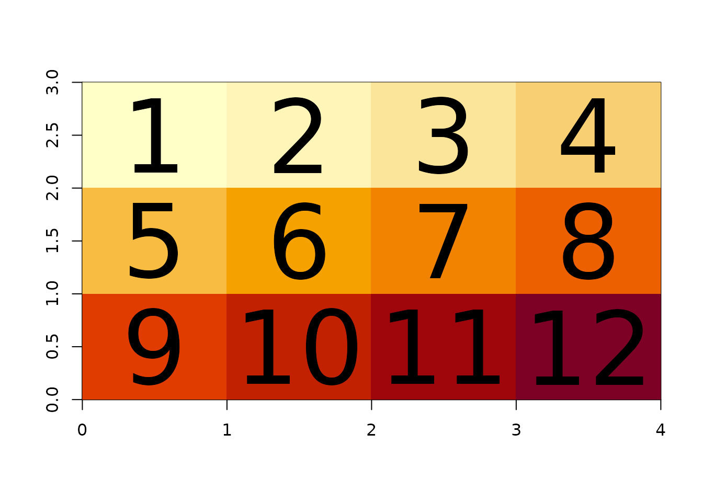
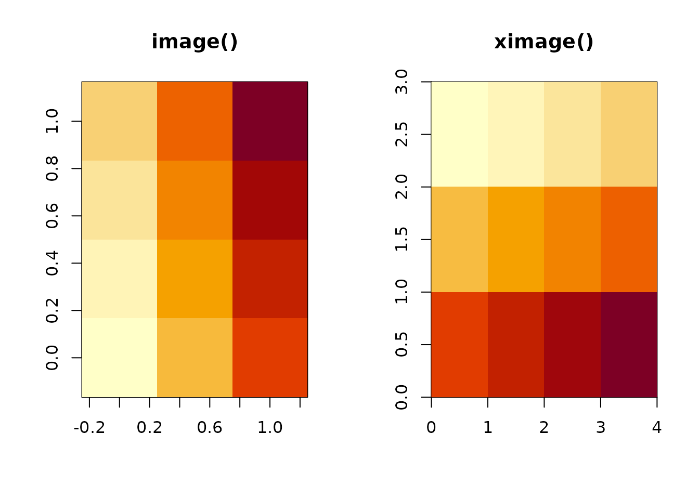
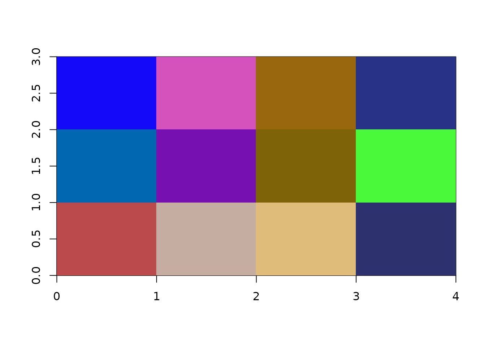
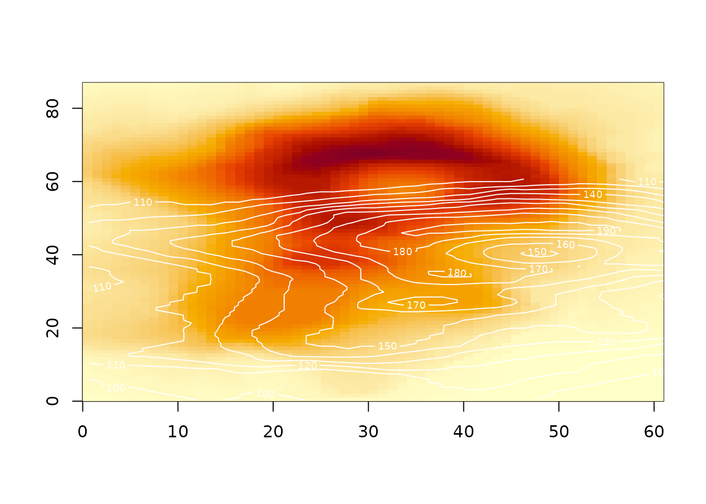

Array orientation: raster order and the R matrix
orientation.Rmd
library(ximage)The short version
ximage draws data in raster order: the first cell of your
matrix is the top-left of the picture, and each row of the matrix is a
scan line reading left to right, down the page. This is the order of
western reading, of par(mfrow), and of every image format
and spatial data reader (GDAL, PNG, JPEG, satellite scan lines).
If you have a stream of pixel values in that order, the R matrix that ximage expects is
matrix(values, nrow, ncol, byrow = TRUE)(note that nrow here is the number of scan lines, and
that R asks for dimensions as nrow,ncol while image formats declare them
as ncol,nrow). The round trip back to the pixel stream is
as.vector(t(m)), because getting values out of a
matrix is always column-major - there is no byrow for
extraction, and none for array() at all.
Everything else in this vignette is a demonstration of why those two lines are the whole story.
Seeing the layout
xtext() draws the values of a matrix at the centre of
each cell, in exactly the layout ximage() uses. A small
labelled matrix makes the convention self-evident.
(m <- matrix(1:12, nrow = 3, byrow = TRUE))
#> [,1] [,2] [,3] [,4]
#> [1,] 1 2 3 4
#> [2,] 5 6 7 8
#> [3,] 9 10 11 12
ximage(m)
xtext(m, add = TRUE)
Cell [1, 1] (value 1) is at the top left. Reading along
the top row of the picture reads along the first row of the matrix: 1,
2, 3, 4. The default plot space is the index space of the
matrix, 0,ncol on x and 0,nrow on y, so the
picture is ncol wide and nrow tall and each
cell is 1 x 1.
Note the y axis: row 1 of the matrix is at the top, between y = 2 and y = 3. Axis coordinates increase upward as in any R plot, but row indices increase downward, as in any image. ximage does not pretend otherwise, it simply places the first row at the top where an image expects it.
What image() does instead
Base image() uses a different convention: the
rows of the matrix map to the x axis and the columns
to the y axis, with the first column at the bottom. The same matrix:

par(op)image() has effectively rotated the data 90 degrees
anticlockwise: what you see is the transpose, flipped. The classic
incantation to make image() show a matrix the way you would
print it is
and forgetting one half of that (or applying it twice) is the source
of a whole genre of plotting bugs. With ximage the incantation is
ximage(m).
rasterImage(), which ximage uses underneath, already
follows raster order. What it lacks is everything else: it cannot start
a plot, cannot map numeric values through a palette, and cannot handle
missing values. ximage is raster-order rasterImage() with
those limitations removed.
From pixel stream to matrix and back
Spatial readers hand you scan lines: a vector of values in raster order, with the dimensions declared alongside as (ncol, nrow) - x before y, the image-format convention. The two conversions are:
vals <- 1:12 # the pixel stream, raster order
dimension <- c(4L, 3L) # (ncol, nrow), as a reader declares it
m <- matrix(vals, dimension[2L], byrow = TRUE)
m
#> [,1] [,2] [,3] [,4]
#> [1,] 1 2 3 4
#> [2,] 5 6 7 8
#> [3,] 9 10 11 12
## and back again
all(as.vector(t(m)) == vals)
#> [1] TRUEximage() applies this conversion for you when given
reader output directly. A list with dimension and
extent attributes (the vapour convention), or a vector or
list with a gis attribute (the gdalraster convention),
plots correctly with no handling at all:
l <- structure(list(vals), dimension = dimension, extent = c(0, 4, 0, 3))
ximage(l)
xtext(l, add = TRUE)
The rule inside ximage is simple: if the dimensions arrived as an
attribute, the data is a raster-order stream and gets the
byrow treatment; a bare R matrix is taken to be already
oriented. That is why ximage(list(volcano)) and
ximage(volcano) are identical, while reader output - even
when a reader has pre-shaped it into a matrix - is reassembled from the
stream.
Multi-band arrays
There is no byrow for array(), so a
raster-order stream of RGB bands needs one more step. Band-sequential
data (all of band 1, then band 2, then band 3, which is what GDAL
readers return) becomes a display-ready array with:
nbands <- 3L
stream <- runif(prod(dimension) * nbands)
a <- aperm(array(stream, c(dimension[1:2], nbands)), c(2, 1, 3))
dim(a) ## (nrow, ncol, nbands)
#> [1] 3 4 3
ximage(a)
The array() call shapes each band as (ncol, nrow) -
filled column-major, so each column holds a scan line - and the
aperm() swaps the first two dimensions to give R display
orientation. Again, ximage does this for you when the bands come as a
reader-output list; the recipe is shown for when you meet a raw
stream.
Extent: cells have edges
The extent argument (xmin, xmax, ymin, ymax) declares
the outer edges of the data, not the centres of the corner
cells. The default index-space extent c(0, ncol, 0, nrow)
follows the same rule: cell [1, 1] spans x from 0 to 1 and
y from nrow - 1 to nrow, and its centre - where xtext()
puts the label - is at (0.5, nrow - 0.5).
ximage(m, extent = c(140, 148, -44, -38))
xtext(m, extent = c(140, 148, -44, -38), add = TRUE)
axis(1); axis(2)
abline(v = seq(140, 148, by = 2), h = seq(-44, -38, by = 2), lty = 3)This edge convention is shared by GDAL geotransforms and by
rasterImage(), and it is what makes images from different
sources overlay exactly: an extent is a statement about where the data
sits, not about where its first sample was taken.
xcontour() uses the matching cell-centre positions, so
contour lines and image cells register correctly:

Summary
- ximage displays matrices in raster order: first cell top-left, rows are scan lines.
- Stream to matrix:
matrix(vals, nrow, byrow = TRUE). Matrix to stream:as.vector(t(m)). - Reader dimensions are (ncol, nrow); R dimensions are (nrow, ncol).
- Multi-band streams:
aperm(array(vals, c(ncol, nrow, nbands)), c(2, 1, 3)). -
extentdeclares cell edges, cell centres sit half a cell in. - ximage applies all of this automatically for vapour and gdalraster output; the recipes are here for everything else.